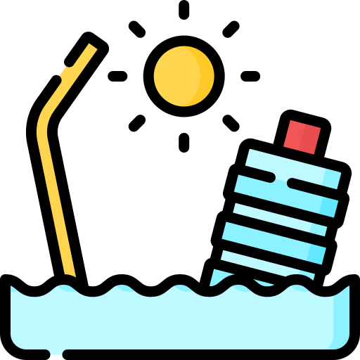
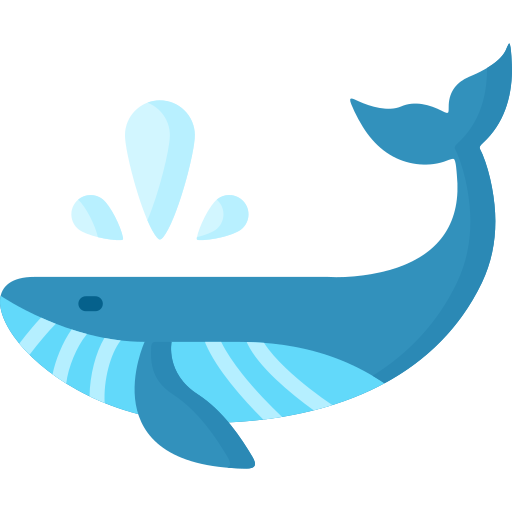

A ONU estabeleceu alguns objetigos para reduzir os impactos causados pelo homem nos oceânos, como diminuir a
acidificação dos onceanos,combater a pesca ilegal e destrutiva, á restauração da população de peixes em
menor tempo possível, conservar 10% das zonas costeiras e marinhas e garantir a conservação e o uso
sustentavel dos oceanos e seus recursos com base no UNCLOS, conforme resgistrado no parágrafo 158 "Futuro
Que Queremos"
Quase todos os objetivos impostos pela ONU tem a expectativa de se concluirem ainda esse ano (2020). a
vida marinha e de extrema importância para o nosso planeta que tem 71% coberto por ele.
A Seção de Assistência ao Ensino do Museu Nacional disponibiliza a educadores e educandos um vídeo para apoio
didático na área de história natural. Conhecendo a biodiversidade marinha no Brasil apresenta os principais
grupos de organismos encontrados em nossas águas, desde algas até baleias. Imagens da rica biodiversidade de
áreas remotas do país podem ser levadas para dentro das salas de aula, fixando de forma simples, direta e rápida
conteúdo científico produzido em diferentes Unidades de Conservação da natureza.

Todos os dias os oceanos e mares recebem milhões de toneladas de substâncias poluentes, que são das mais
diversas formas, como por exemplo o esgoto doméstico e industrial, resíduos agrotóxicos, lixos sólidos, como
pneus, garrafas de refrigerante, latas e muitos outros tipos de materiais. Foi realizado por um grupo de
cientistas da Universidade da Califórnia (EUA), a partir da pesquisa foi constatado que 41% de toda área marinha
já sofreu impactos.

Muitos animais marinhos estão em risco de extinção, como a baleia-azul, que tem sido alvo de caça predadoria por
decadas, estimase que 200,000 baleias-azuis tenha sido mortas.
Ela é o maior animal marinho do planeta, podendo chegar até 30 metros de comprimento e pesar 180 toneladas .
A Ilha do Pacífico, conhecida como o maior depósito de lixo do mundo. São 4 milhões de toneladas de garrafas e
embalagens, que foram empurradas para lá pelas correntes marítimas e formam um amontoado com mais de 700 mil
quilômetros (duas vezes o estado de São Paulo). É o grande exemplo do quanto precisamos nos conscientizar e
evitar a poluição mesmo embaixo d’água.
"A ideia é estimular a pesquisa oceânica", diz o professor Alexander Turra, do Instituto Oceanográfico da
Universidade de São Paulo (IOUSP). "A preocupação com os oceanos subiu na agenda nacional no último ano". Um relatório da Organização para a Cooperação e o Desenvolvimento Econômico (OCDE) de 2016 estimou que
a economia dos oceanos pode representar US$ 3 trilhões em 2030 em empregos e atividades produtivas. Segundo o
estudo da PUC do Rio Grande do sul, estimou que os da ecônomia dos oceanos representaram 19% do PIB em
2015, incluindo aí segmentos como petróleo, transporte, pesca, cabos submarinos, lazer e turismo.